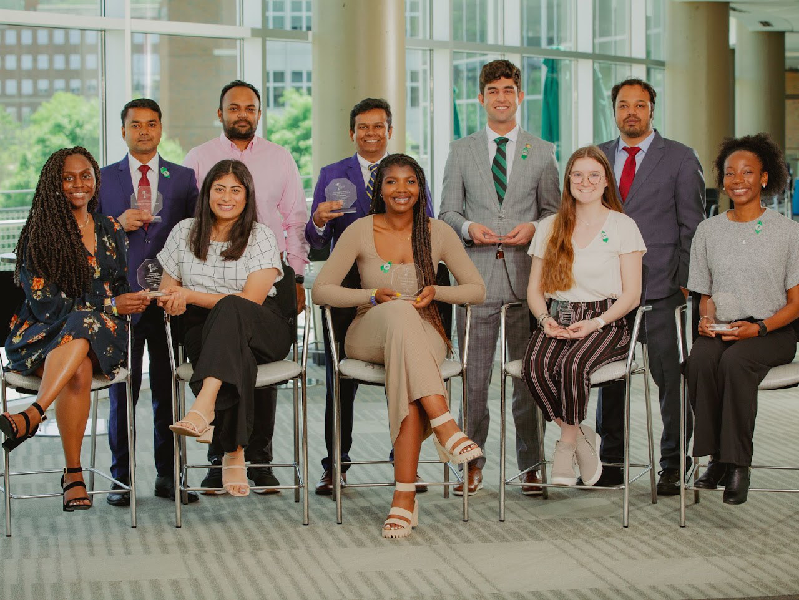
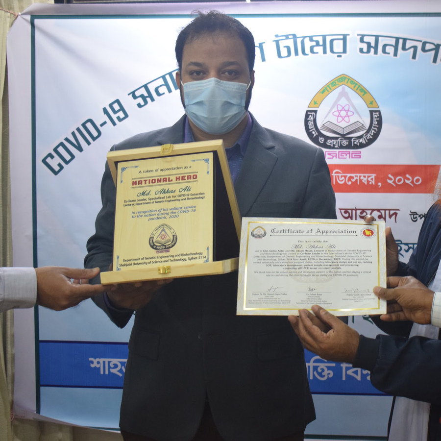

Advanced to PhD candidacy
All three PhD students in the lab have now passed their qualifying exams. I advanced to candidacy in Summer 2025.
Tyrrell LabNeuroimmunology · Brain aging · Vascular dementia
I am a PhD candidate and graduate research assistant at the University of Alabama at Birmingham, studying how age-associated CD8+ T cells and neuroimmune interactions contribute to vascular cognitive impairment and dementia.
News
Milestones, awards, and talks, as reported by the Tyrrell Lab at UAB.
All three PhD students in the lab have now passed their qualifying exams. I advanced to candidacy in Summer 2025.
Tyrrell LabAwarded a two-year AHA Predoctoral Fellowship supporting my dissertation research on how the aging immune system contributes to vascular cognitive impairment and dementia, mentored by Dr. Daniel J. Tyrrell.
UAB Heersink NewsGave the first oral presentation of the day at the UAB Graduate Biomedical Sciences symposium.
Tyrrell LabPresented “Age-Associated CD8+ T Cells Accumulate in the Aging Brain” in Chicago; the abstract appears in Circulation.
Tyrrell LabReceived departmental support to attend AHA Scientific Sessions 2024.
Tyrrell LabPresented at the 2024 Southeast Immunology Symposium, hosted at UAB.
Tyrrell LabPresented my work on CD8+ T cells in vascular dementia and aging.
Tyrrell LabPresented in Gainesville, Florida.
Tyrrell LabSpoke to incoming Graduate Biomedical Sciences students at UAB.
Tyrrell LabLed an overview of Illumina next-generation sequencing for the lab.
Tyrrell LabStarted as a Graduate Biomedical Sciences PhD student in the UAB Department of Pathology.
Tyrrell LabAbout
My long-term goal is to become an independent investigator in neuroimmunology and develop therapeutic strategies that improve cardiovascular and brain health in aging populations.
In the laboratory of Dr. Daniel J. Tyrrell, I combine experimental and computational approaches to study immune mechanisms of vascular cognitive impairment and dementia. My training spans rodent models of neurovascular disease, brain immune-cell isolation, neuropathology, single-cell transcriptomics, spectral flow cytometry, and bioinformatics.
Current research
My doctoral work examines published and publicly presented evidence connecting age-associated T-cell states with neuroinflammation and vascular cognitive impairment.
Doctoral focus
I investigate how cytotoxic and Granzyme K–associated CD8+ T-cell states accumulate with age and how their interactions with pro-inflammatory microglia may shape the neuroimmune environment in vascular dementia.
Immune aging
My work contributes to understanding how clonally expanded memory CD8+ T-cell populations differ across aging, atherosclerosis, and neurovascular disease.
Vascular biology
I have examined how mitochondrial dysregulation, oxidative stress, and impaired quality control contribute to vascular decline across the lifespan.
Computational immunology
I co-developed CAFÉ, an analysis pipeline and integrated web application designed to improve reproducible characterization of complex spectral flow cytometry data.
Scholarship
Selected peer-reviewed articles, research software, preprints, and conference abstracts. The complete record lives on Google Scholar and ORCID.
Selected highlight Bioinformatics · Research software
Md Hasanul Banna Siam, Md Akkas Ali, Donald Vardaman, Satwik Acharyya, Mallikarjun Patil, Daniel J. Tyrrell
DOI: 10.1093/bioinformatics/btaf176The Journal of Immunology · Original research
Holly R. Stephens, Elizabeth Elkins, Jing Li, et al., Md Akkas Ali, et al., Lyse A. Norian
DOI: 10.1093/jimmun/vkag013Cells Tissues Organs · Original research
Meghana Madabhushi, Rachel Erin Murphy, Md Akkas Ali, Muthuvel Paneerselvam, Mallikarjun H. Patil, Daniel J. Tyrrell, Juhi Samal
DOI: 10.1159/000547463The Journal of Immunology · Conference abstract
Md Akkas Ali, Daniel J. Tyrrell, Md Hasanul Banna Siam, Mallikarjun Patil
DOI: 10.1093/jimmun/vkaf283.406The Journal of Immunology · Co-first author
Donald Vardaman III*, Md Akkas Ali*, Md Hasanul Banna Siam, et al.
* These authors contributed equally.
DOI: 10.4049/jimmunol.2400370American Journal of Physiology–Heart and Circulatory Physiology · Review
Md Akkas Ali, Rachel Gioscia-Ryan, Dongli Yang, Nadia R. Sutton, Daniel J. Tyrrell
DOI: 10.1152/ajpheart.00632.2023Circulation · Conference abstract
Md Akkas Ali, Donald Vardaman, Chase Bolding, et al.
DOI: 10.1161/circ.150.suppl_1.4146396bioRxiv · Preprint
Nicole J. Corbin-Stein, et al., Md Akkas Ali, et al.
DOI: 10.1101/2024.06.02.597035Nature Aging · Original research
Daniel J. Tyrrell, Kathleen M. Wragg, Judy Chen, et al., Md Akkas Ali, et al.
DOI: 10.1038/s43587-023-00515-wTraining and experience
Department of Pathology, University of Alabama at Birmingham · Advisor: Daniel J. Tyrrell, PhD
University of Alabama at Birmingham
Shahjalal University of Science and Technology, Bangladesh · Lecturer and Assistant Professor roles
Healthcare Pharmaceuticals Limited, Bangladesh
University of Alabama at Birmingham
Shahjalal University of Science and Technology
Shahjalal University of Science and Technology
Scientific communication
Public conference abstracts and invited presentations documented in my AHA biosketch.
American Association of Immunologists Annual Meeting · Honolulu, Hawaii
University of Alabama at Birmingham
American Heart Association Scientific Sessions · Chicago, Illinois
Invited presentation · MD Anderson Cancer Center
Southeast Immunology Symposium · University of Alabama at Birmingham
McKnight Brain Research Foundation Annual Meeting · Gainesville, Florida
Photo gallery
Selected moments from research, university service, and scientific community engagement.


Commitment to Community Engagement Award, UAB
Leadership and recognition
My professional service includes leadership in COVID-19 diagnostic testing, international student engagement, and scientific communication.
Contact
I welcome conversations about neuroimmunology, vascular dementia, high-dimensional immune profiling, and collaborative research.
mali3@uab.edu